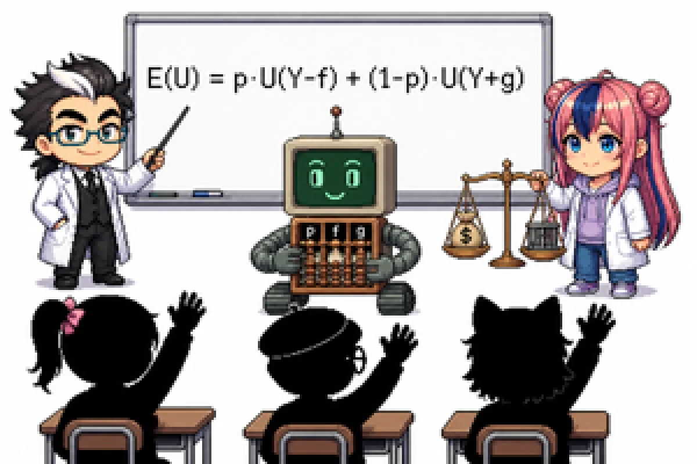

범죄자의 경제학 — AI가 범죄를 매력적으로 만드는 이유
베커의 부등식으로 계산한 AI 범죄의 손익분기점

처음 오신 분께 — 이 페이지를 3줄로
- 무엇을: 베커의 기대효용 모형으로 범죄를 고르는 계산을 그대로 따라간다.
- 왜 중요한가: AI는 직접비용·기회비용·처벌 위험·죄책감을 한꺼번에 낮춘다.
- 생활·업무에서는: 정책에서는 처벌을 무겁게 하기보다 '반드시 잡힌다'는 확실성을 높이는 편이 효율적이다.
코드와 수식을 몰라도 됩니다. 수식은 조수(하루)가 대신 묻고, 박사가 숫자로 한 번 풀어 드립니다.
영어 약어 풀이
- E(U) — Expected Utility, 기대효용
- p* — 손익분기 검거 확률
- CE — Certainty Equivalent, 확실성 등가
등장인물
 박사해설자
박사해설자 조수(하루)추적 팀 · 대응 설계
조수(하루)추적 팀 · 대응 설계 인턴1 시아추적 팀 · 현장 사례
인턴1 시아추적 팀 · 현장 사례 인턴2 모아추적 팀 · 제도·법
인턴2 모아추적 팀 · 제도·법 주판봇계산 담당
주판봇계산 담당 초파리 연구원데이터·모델 분석
초파리 연구원데이터·모델 분석 X1범죄자 대역 · 사기·사칭
X1범죄자 대역 · 사기·사칭 X2범죄자 대역 · 자동화 공격·랜섬
X2범죄자 대역 · 자동화 공격·랜섬 X3범죄자 대역 · 세탁·정보 브로커
X3범죄자 대역 · 세탁·정보 브로커왜 이 장이 필요한가

큰 그림 — 지금 어디쯤인가
이 장의 분석 도구: 범죄경제학 · 마지막 단계는 모든 장 공통의 강화학습 시뮬레이션입니다. 여기서 한 번 멈춰도 괜찮아요. 처음엔 다들 계산서 기호에서 오래 봅니다.
범죄경제학의 기본 원리
방법: 베커 모형범죄경제학(Economics of crime)은 범죄의 원인·동기·결과를 경제학으로 분석한다. 출발점은 노벨경제학상 수상자 게리 베커의 1968년 논문 「Crime and Punishment: An Economic Approach」다. 개인은 범죄로 얻는 편익이 비용보다 클 때 범죄를 선택한다.
원고는 범죄 비용을 세 가지로 나눈다.
| 비용 | 내용 | AI가 바꾼 것 |
|---|---|---|
| 직접 비용 | 시간·도구·이동 비용, 합법 활동을 포기한 기회비용 | 몇 분이면 딥페이크, 클라우드 임대, 재택 '부업' |
| 리스크 비용 | 검거 확률 × 처벌 | 익명성·국경·입증 곤란으로 p와 실질 f 하락 |
| 심리적 비용 | 죄책감, 낙인, 가족 걱정 | 피해자를 보지 않음, 숫자로만 확인 |
단계 대화


사이버 범죄의 경제적 특성
일상: 사이버 범죄의 특성단계 대화

손익분기 검거 확률 — 주판봇의 계산
방법: 손익분기 검거 확률| 처벌 환산 f \ 수익 g | g = 2,000 | g = 3,000 | g = 4,000 |
|---|---|---|---|
| f = 1,000 | 56% | 63% | 68% |
| f = 1,500 | 42% | 50% | 55% |
| f = 2,000 | 32% | 39% | 44% |
| f = 2,500 | 22% | 28% | 32% |
단계 대화
AI가 비용 구조를 바꾸는 세 가지 방식
사례: 비용 구조의 변화① 직접비용의 급감
원고의 대표 사례는 2019년 영국 에너지 기업 사건이다. AI로 모회사 CEO의 목소리를 복제해 단 한 통의 전화로 약 22만 유로를 송금하게 했다. 몇 주의 사전 조사와 신뢰 구축이 필요했던 일이 몇 분으로 줄었다. 진입장벽도 무너졌다. "이메일 주소 1,000개를 수집하는 코드를 짜 줘"라는 요청 한 줄이 전문 지식을 대신한다. 서버도 직접 구축할 필요 없이 클라우드에서 필요한 만큼 빌린다.
② 기회비용의 하락 — '비전업 범죄'
③ 리스크 비용의 구조 변화
- 익명성 증대: VPN·토르·암호화폐의 조합으로 신원 추적이 어렵다.
- 국경 간 수사의 어려움: A국 범죄자가 B국 서버로 C국 피해자를 공격한다. 공조는 느리고 비싸다.
- 수사 역량의 격차: 범죄자는 새 기술을 즉시 쓰지만 수사기관이 따라가는 데는 시간이 걸린다.
- 입증 곤란: "이것은 AI가 만든 가짜"임을 법정에서 증명하기 어렵고, 디지털 증거는 조작될 수 있다.
- 책임 소재 불명: 개발자·사용자·AI 중 누가 책임을 지는지 모호하다.
단계 대화

예비 범죄자 1,000명 모의 실험 — 누가 범죄에 들어오는가
실험: 참여율 모의 실험단계 대화
억제는 어디를 눌러야 효율적인가
방법: 억제 수단 고르기단계 대화
베커 모형 — 손익분기 검거 확률 p*
방법: 기대효용과 로그 효용왜 이 방법을 쓰나
- 문제 상황
- 서장의 계산은 위험을 싫어하는 마음을 무시했다.
- 앞 방법의 한계
- 같은 기대이익이라도 '감옥 갈 수도 있는' 선택을 사람은 덜 좋아한다.
- 해법
- 효용을 로그로 두면 큰 손실을 더 아프게 느끼는 위험 회피가 들어간다. 그 뒤 범죄가 합법적 삶과 같아지는 검거 확률 p*를 찾는다.
- 쉽게 말하면
- '반반 확률로 2배 또는 0'보다 '확실한 1'을 고르는 마음을 식에 넣는 것이다.
수식을 어려워하는 조수가 대신 물어봅니다

- 학교 수학으로 보면
- 로그함수, 기댓값
| 식 조각 | 읽는 법 | 뜻 |
|---|---|---|
| Y | 와이 | 합법적 소득(연 3,000만 원) |
| U(·) = log(·) | 유 | 돈에서 느끼는 만족, 로그라서 많을수록 덜 늘어난다 |
| p × U(Y − f) | 잡혀서 처벌받은 경우의 만족 × 그 확률 | |
| (1 − p) × U(Y + g) | 안 잡혀 수익을 챙긴 경우 × 그 확률 | |
| E(U) > U(Y) | 이 부등식이 맞으면 범죄를 고른다 |
- 숫자로 한 번 해 보기
- AI 범죄(g=4,000, f=1,500), p=0.3: E(U) = 0.3 × log(1,500) + 0.7 × log(7,000). 이것을 확실한 돈으로 바꾸면 약 4,410만 원이다. 합법 소득 3,000만 원보다 약 1,410만 원 높으니 범죄를 고른다. 같은 p에서 전통 범죄는 약 −494만 원이라 고르지 않는다.

AI 판단 코너 — 주판봇의 확신, 맞을까?
실험: 직접 바꿔 보기
교안의 파이썬 코드로 보면 (몰라도 됩니다)
eu = p*log(Y-f) + (1-p)*log(Y+g)
두 경우의 만족을 확률로 섞는다.
도덕적 원칙이 아니라 제도로 — 이 장의 네 가지 손잡이
방법: 규칙 · 인센티브 · 디스인센티브 · 강제력| 요소 | 이 장의 제도 | 하는 일 |
|---|---|---|
| 규칙 | 부업형 가담(계좌 대여·인출책)도 처벌 대상으로 명시 | 무엇이 금지·의무인지 정한다 |
| 인센티브 | 자수·협조자 감경, 합법 일자리 연계 | 지키는 쪽을 이익으로 만든다 |
| 디스인센티브 | 범죄수익 환수 | 어기는 쪽을 손해로 만든다 |
| 강제력(집행) | 검거율을 올리는 국제 공조·로그 보존 의무 | 실제로 찾아내고 적용한다 |
단계 대화
X2는 무엇을 배울까 — 제도를 바꾸며 3,000번 학습
방법: 강화학습(Q-러닝, 엡실론-탐욕)왜 이 방법을 쓰나
- 문제 상황
- 앞 단계의 계산은 '한 번의 선택'이었다. 실제 행위자는 해 보고, 결과를 보고, 다음 선택을 고친다.
- 앞 방법의 한계
- 기댓값 계산은 행위자가 모든 확률을 안다고 가정한다. 현실의 행위자는 경험으로 배운다.
- 해법
- 강화학습 에이전트를 두고, 제도가 만든 보상만 주어 스스로 배우게 한다. 무엇을 배우는지 보면 제도의 효과가 보인다.
- 쉽게 말하면
- 강아지 훈련처럼, 잘하면 간식(인센티브)·잘못하면 간식 없음(디스인센티브)을 '매번 확실하게' 줄 때 행동이 바뀐다.
수식을 어려워하는 조수가 대신 물어봅니다
- 학교 수학으로 보면
- 점화식(앞 값으로 다음 값을 만드는 식), 평균
| 식 조각 | 읽는 법 | 뜻 |
|---|---|---|
| Q(행동) | 큐 | 그 행동이 평균적으로 얼마를 주는지에 대한 지금까지의 짐작 |
| r | 알 | 이번에 실제로 받은 보상 |
| α | 알파 | 새 경험을 얼마나 반영할지(여기서는 해 본 횟수 분의 1 → Q는 평균이 된다) |
| Q ← Q + α × (r − Q) | 짐작을 '실제 − 짐작'의 일부만큼 고친다 | |
| ε | 엡실론 | 가끔 일부러 다른 행동을 해 보는 비율(처음 30% → 끝 2%) |
- 숫자로 한 번 해 보기
- α는 '그 행동을 해 본 횟수 분의 1'이다. 첫 시도에 성공해 +980(=1,000−20)을 받으면 α=1이라 Q = 0 + 1 × (980 − 0) = 980. 두 번째에 실패하고 잡혀 −1,520(=−20−1,500)을 받으면 α=1/2이라 Q = 980 + ½ × (−1,520 − 980) = −270. 두 보상의 평균 (980 − 1,520) ÷ 2와 같다.
단계 대화 · AI 판단 코너

실험: 제도를 켜고 끄며 학습시키기
세 행동: 본업만 · 전업 범죄 · 부업형 AI 범죄. 보상 단위는 만 원, 모든 숫자는 교육용 예시다.
교안의 파이썬 코드로 보면 (몰라도 됩니다)
n[a] += 1; Q[a] += (r - Q[a]) / n[a]
받은 보상과 짐작의 차이를 해 본 횟수로 나눠 고친다. 결과적으로 평균 보상이 된다.
X2 vs 추적 팀 — 계산서 공방
X2의 수퇴근 후 두 시간만 AI 도구를 돌리는 '부업형 범죄'를 시작한다.
 인턴2 모아의 수
인턴2 모아의 수플랫폼 로그 보존 의무와 국제 공조 상설화로 검거 확률을 올린다.
무승부예요. p가 오르면 전통 범죄는 멈추지만, AI 범죄는 p만으로 멈추지 않습니다. 3·4장의 π 대응이 함께 필요합니다.
정리 퀴즈
오늘의 연구실을 마치며
이 장의 개념 지도
| 개념 | 뜻 | 함께 보는 장 |
|---|---|---|
| 베커 모형 | 기대효용으로 범죄 선택을 설명하는 모형(1968) | 02장 |
| 손익분기 검거 확률 | 범죄와 합법적 삶이 같아지는 검거 확률 p* | 02장 10장 |
| 처벌의 확실성 | 처벌 강도보다 억제력이 크다고 보고되는 요소 | 02장 04장 |
| 기회비용 | 범죄를 위해 포기한 합법 소득 | 02장 |
온톨로지·서지 꾸러미
강의 자료나 지식 그래프에 옮길 때 쓰세요.
JSON-LD (schema.org)
{
"@context": "https://schema.org",
"@type": "LearningResource",
"name": "범죄자의 경제학 — AI가 범죄를 매력적으로 만드는 이유",
"description": "베커의 기대효용 모형으로 범죄를 고르는 계산을 그대로 따라간다.",
"inLanguage": "ko",
"isPartOf": {
"@type": "Book",
"name": "AI 범죄와 자기 방어",
"isbn": "9791143009050",
"datePublished": "2025-10-10",
"publisher": {
"@type": "Organization",
"name": "커뮤니케이션북스"
},
"url": "https://books.google.co.kr/books/about/AI_%EB%B2%94%EC%A3%84%EC%99%80_%EC%9E%90%EA%B8%B0_%EB%B0%A9%EC%96%B4.html?id=FimKEQAAQBAJ"
},
"author": {
"@type": "Person",
"name": "안상선",
"url": "https://adminmrobo.github.io/who_am_i/who_am_i.html"
},
"teaches": [
"베커 모형",
"손익분기 검거 확률",
"처벌의 확실성",
"기회비용"
],
"educationalLevel": "입문",
"url": "https://adminmrobo.github.io/ai_crime_lab/ch02.html",
"about": [
"범죄경제학",
"범죄경제학",
"AI 범죄"
]
}BibTeX
@misc{ahn2026aicrime_ch02,
author = {안상선},
title = {AI 범죄 연구실 — 2장 범죄자의 경제학 — AI가 범죄를 매력적으로 만드는 이유},
note = {『AI 범죄와 자기 방어』 보충본},
year = {2026},
url = {https://adminmrobo.github.io/ai_crime_lab/ch02.html}
}